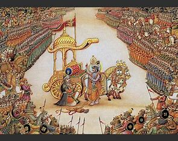

As the Kurukshetra war started to begin,Kings of various lands started siding with either Kauravas or Pandavas for the war.But ,there were some kings who could not decide either of the side and remained neutral in the war.One of such kings is King Udipi,who remained neutral yet played a very important role in the war.Let us know about him.
Both pandavas and kauravas were equally lovable to King Udipi.Hence,he remained to remain neutral in the war.But as his kingdom was famous for their tasty food,he decided to take up the task of providing food to all the soldiers in the war thus playing a crucial role .
There is an interesting context on how king udipi would know how much amount of food is to be the next day.As several soldiers die in the war,it becomes almost impossible for people to estimate the amount of food to prepare.So,King Udipi who was well aware of Krishna's divinity and hence he would take a bowl of nuts every day after the war.Krishna would only eat some nuts.So with the remaining nuts,King Udipi would multiply and thus prepare enough food for all.
Sri Krishna was amazing wasn't he???......Well, let me know......